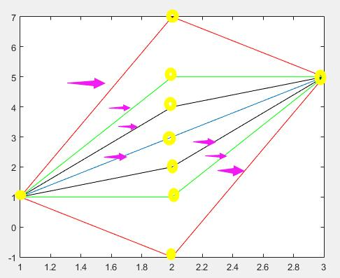

Zhy's Blog~

Codeforces Round #333
CF#333，Virtual participation，题目偏难，但质量很高，有时间要考虑把没做的题补一下...
题意：给出两个进制下的两个数，比较大小。
解法：进制都转换到10进制即可。
题意：求一个序列里极差不超过1的连续子序列的最长长度。
解法：当然题目里给出了特殊条件，|ai + 1 - ai| ≤ 1还有M - m ≤ 1。使得可以使用比较针对的方法来做这道题，具体方法也比较简单，不必细说了。 通用的算法应该是单调队列，当然维护单调队列的同时要记录队列中各项的对应位置以方便我们知道当前最长区间的左边界——从队列头弹出的项对应的下标+1。
题意：n个城镇，两两之间由公路/铁路连通，每条路径上的时间花费均为1，求从1号城镇出发，分别通过公路和铁路到达n号城镇，且中途不相遇的最短时间。
解法：竟然以为是N^2个状态的基于SPFA/BFS的DP，想了各种姿势都觉得要爆炸，结果突然发现——两两相通...相通...通... 既然这样，也就是说1到n有一条边，不是铁路就是公路，如果1到n是铁路，那就是说铁路1小时就到了，根本不会和公路发生任何交集，这个时候只用求出1到n走公路的最短路即可；反之亦然。BFS/Dijkstra/SPFA甚至Floyd都可以做。
题意：难以概括，还是自行读题吧。
解法：
首先，一个区间内的点对之间最大的斜率一定出自相邻的点对，具体参见下图，不做过多证明：

这时可以转化为n-1个斜率的问题，每个斜率值的影响范围决定了它在最终的计算中共计算了多少次——比如样例1的(9,1)点对，也就是斜率为8，它的影响范围是向左4个斜率，向右6个斜率，如果没有区间[l,r]限制，它能影响的区间个数是4*6 = 24个，也就是说[l,r]=[1,n]的时候8这个数值要算24次。
进一步解释样例1的第二个query，[l,r] = [3,8]：
斜率序列是[7 8 2 1 2]，所以：
ans = 7*1*1 + 8*2*4 + 2*1*3 + 1*1*1 + 2*2*1这样应该就比较清楚了，也就是 值*向左延伸个数*向右延伸个数，延伸的条件是延伸区间的值都小于等于当前值。 当然，对于值相同的时候，延伸还是不延伸是一个问题——考虑到不重不漏，可以采用值相同的时候只向左延伸或者只向右延伸。
这样的话，我们需要预处理出来每个值的影响区间，共需两遍扫描，一次从左向右，扫出右边界；一次从右向左，扫出左边界。具体实现要使用栈，每次压栈之前要去掉栈顶比当前值小的项，因为它们不再可能影响这个方向上以后的区间；被弹出的项要记录弹出时候扫描到的位置，即为其影响范围的边界，具体参见代码。当然这个处理可以针对每个query的区间来做，也可以全局做一遍，然后计算的时候考虑query的区间边界。我的代码是全局预处理的。
题意：
解法：
code